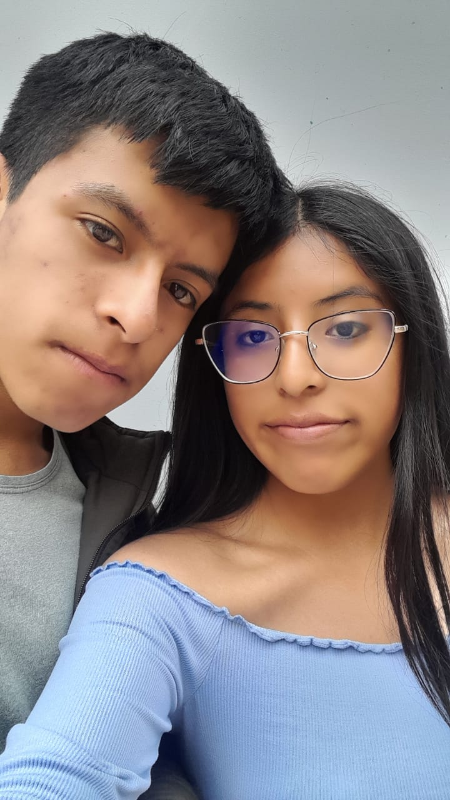

Felices 7 meses para mi niñitaa🌷Greysi⚽
Aunque estemos lejos, esto existe para recordarte que te pienso todos los días.
Una canción más que única
Como ya es constumbre, estas notas nos recuerdan que somos y como llegmaos a esto mi amor👑💖♟️.
Galería



Un corto resumen de nosotros amor
Mes 1😨
Todo parecía aclararse en mí, ví en tí alguien muy hermosa en cuerpo y alma, acepto que en esos tiempos todo era casi color
de rosa, no nos conocimaos mucho como pareja, pero si intentabamos compartir muchos momentos para ir creando esa confianza. Recuerdo nuestras noches
sentados en la baquita debajo de las escalera de la biblioteca antigua, aunque lo mucho que aspiraba era un abrazo, para mí eso era suficiente,
me sentía como un hombrecito feliz, admito que la confianza creció rápido, pues aún recuerdo ese jueves que cumplimos nuestro primer mes y como
lo celebramos, aun acto de erotismo que se trasformo en una heramienta para perder mis miedos, sentí mucha más libertad para contarte cosas y así amor...
Mes 2 💖💖
En esta etapa tal vez se recuerda las inseguridades de cada uno, se mostraban ciertas diferencias, aunque ese cariño no desaparecía,
ahí fue cuando empezé a tener miedo a perderte por otra persona, y en tu caso recuerdo eso de liszeth, que admití que tenía errores, pro ello
tome medidas ante eso amor. Creo que en eso meses teniamos ciertas peleas, creo que en toda relación hay, y estás nos ayudaron a conocerse mejor y comprenderse más,
en esos meses conocimaos nuestrsp gustos y cada vez se completaba mejor la base de ese amorr fuerte mi vidaa.
Mes 3 🌷
En estos meses ya sentía esa fuerza o esa llama que le dicen de nuestro amorr, recuerdos esos días de fotos y todo amorr, en esos momenetos
si teniamos algunos actos eroticos mi vidaa y me gutaban mucho, pero también había esas cositas sensibles mi vidaa. Recuerdo cuando venías en ropita de pijama al aula
me gustabas mucho asi aunque no lo creas te veías más tierna, a veces muchas cosas simples que haces para mi son muy significativas y las valoro mucho.
También recurdo que en esw mes hubo una pelea fea, por ahi como el 4 de Agosto, por un pata de por ahi, creo que sabes quien amor jsjs, paso eso de la fiesta,
y si admito algo ahi me desilucioné un poco. Porque no me había pasado nunca, como tu me dijiste ese día no tengo mucha experiencia en relaciones, y si me afectó algo ese mes,
pero sé que no hiciste con mala intensión, despues de ello de no paso algo similar creoo, y pues me die cuenta que ambos si estabamos dispuesto a mejorar. Eso me ayudo mucho
también en entender que el amor no es solo felicidad, también tenemosestas cosas, considero un mes clave amor.
Mes 4💓💓
Uyy este mes también fue potente, llegaron muchas cosas como las resiones del IB que hacían sentir más feo feo amor, con las encuestas de miss Maritza, Martha que no revisba amor
y pues Gilmer siempre ahi sjsjs, en este mes te di una tarjetita amorr, pero snoopy creo amor sisis. Pero también recuerdo que te enfermaste más feito amorr ayy, y pues me estaba volviendo más médico personal mi vida,
todo eso me gusto amorrr, y pues no me cansaré de repetirlo, ahh y sabes? te acuerdas cuando saliamos a casa y pues eramos muy excitados, de eso audios, video y fotos amorr, fue algo que terminaba de llenar cualquier vacío de
confianza que tuviesemos amorr. Auqnue es cierto que las peleas nunca nos dejaban, también fue un mes en el que lloramos ambos amorr. Por nosotros, por tareas y enfermedades amor, ayyy mi vidaa. TE AMOO
Mes 5🫶
MNo sé yo amorr pero fue uno de los meses más estresantes amorr, mucho tiempo de ti en tu casita amorr, de verdad que la preocupación fue muy grande.
Y más con eso de que querías dejar el IB ratita de verdad, créeme que no hubiese podido yo tampoco terminar si es tu salías amorr, es que mi estabilidades la dejaste hecha para ti y nadie más, entonces
cómo lo hubiese hecho amor? Aunque creo que ese mes también vimos como era apoyarse mutuamente, tanto en lo academico como emocional, creo que en ese mes abandonamos un poco
nuestro lado erotico porque era mucho de llorar amor ayy🥹🥹. Pero de ahí creo que fue como un lazo que se fortaleció en ambos amorr, para esa fecha no había mucho tiempo y solo fue una cajita celente creo amorr,
en la que te aclaré que toda iba a ir bien en los examenes y eso pasó creo amorr. Y sobre todo que caminariamos jusntos mi vida. Por eso es que aquí estamos.
Mes 6💖😭
Si pienso en este mes, diria que fue uno de los mejores, por muchas cosas, como; los detalles, palabras, acciones. Pues lo que rescato de esto a parte de ser nuestro MEDIO AÑO juntos
es el detalle por mi cumple amorr, de verdad sé que eres y serás la unica persona no familiar que hizo eso por mí, y muchas gracias otra vez, quiero que sepas que conservo cada detalle de ello y lo voy a
llevar a LIMA sisi, aunque el cartón grande creo que lueguito amor sisi, pero de verdad fue uno de los mejores, me demostraste lo que podías dar por mí y de verdad GRACIAS TOTALES, en mi caso por tu cumple también
intenté dar eso amorr, pero creo que fallé un poco y perdón si fue así mi vida😔. Además, creo que el detalles que conservamos como unico de ese mes también son las pulserás compartidas amorr, que nos indican nuestra unión como
ROMERO MICHA, y en unos años ese apellido llevará un nombre femenino o masculino amor sisis. En sisntesis noviembre fue un mes hermoso amorr, por nuestro cunpleaños y todo ello, aunque
eso de la fiesta está para corregir amorr, si bien lo habalamos, esa discusión fue igual a la que tenemos a veces por whatsapp, asi que eso se mejorar amorr, por nostros de ahora y
por lo que queremos para nuestro FUTURO princesita linda👑.
Mes 7🫂💪🤩
Inicia desde hoy, asi que recuerdos de este mes no hay pero si tengo deseos y espectativas amorr. Quiero que reduzcamos las pelemaos, por la relación y por lo que que queremos contruir, si estamos peleados no podemos
centrarse en lo academico amorr asi que reduzcamos eso amorr, soluciones rapidad mi vida, sin minimizar claro amorr. Y además esta debería ser la primera es que; compartamos una noche juntos amorr, sueño con eso día y noche amorr,
quiero que seas otra vez la primera y unica en eso amorrr, asi como ya lo has hecho en muchas cosas mías amorr. Sé que nos esperan grandes retos en muchos aspectos, pero hemos solucionado muchso también en todo nuestro camino, porque no hacerlo una, diez, cien, mil, millones de veces más amorr.
Porque no luchar por nosotros como si lucharamos por salvar una familia, porque si, eso es lo quiero, y no matemos esa ilución de NINGUNOS DE NSOTROS AMOR💖🥹. Lo vamos hacer mi vidaa, y desde hoy iniciar una nueva etapa también, en unnos días un nuevo año, pero en nosotros el mismo amor y creo que uno más fuerte mi vida.
Ahora un compromiso persona; "prometo ser lo que una princesita desea, y aompañar en las buenas y en las malas, y ni que habalr del cariño que me sobre por ti" Te amo GREYSI BRIGHITH MICHA RODRÍGUEZ, nunca, pero nuna olvides eso tii💓💓💓💓💞👑👑💓💓💓💓💞. MUAKK
Cuenta regresiva
Qué es un aproximado amorr, peor solo tiene un margen de error, más menos 2 días amorr, ya falta poco ti
—
Si es que siempre me extrñas léelo siemore shii amor 💌
Eres esa personita tan especial que me ha acompañdo y me ha dado motivación siempre, eres tú quién me hace decir "con que hermosa mujer estoy" lo digo de verdad, porque si hay algo en ti que me cautiva más es esa, tu hermosura, y tu cariño que siempre tienes para mí, con eso podría vivir siempre y sería elfeliz también por siempre. Te amooo, Greysi hermosa, princesita de mis sueños.